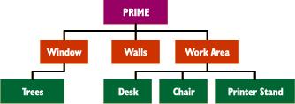

|

|
Detail n. 1. Skotos Games. A distinct, non-portable element that may be found within a room. Similar to items or views in older MUDs. |
As a game designer, you'll spend a fair amount of time writing descriptions of rooms. Rooms are, after all, the bases of your entire game. As players move through these environments that you create, they'll be guided in how they should interact with your world.
Two weeks ago I discussed how rooms typically offer multiple levels of descriptions, so that players can see more if they choose to pay more attention. At Skotos, our four levels of room description are: brief, glance, look, and examine.
To offer a quick example, here's the "look" description I wrote for my home office:
This cluttered office is approximately ten foot by ten foot. On the far wall a patio door and a large window open up onto opulent greenery beyond. The door is partially blocked by a rocking chair, and the window is somewhat obscured by a cat tree. Some book cases line the other walls, just barely leaving enough space for a work area in the left corner of the room.
This is all great and dandy, but what do you do if you want to offer some more information on a particular element in the room? For example, if that patio door mentioned in the room description had ten symmetrical window panes, you might want to note this. How do you do so when you just have your four levels of room description?
The answer, at Skotos, is details, but before I get there I want to look at the historical answer in brief.
A History of "Details"
In general, traditional MUDs have dealt with what we call details at Skotos, but they've done so in fairly limited ways.
The first MUD that I ever programmed on was AberMUD, in about 1990. It didn't include any specific mechanism for describing non-portable sub-elements of a room, but the problem was a well known one, and thus the solution was well-known too. Within any room, you could intercept the commands that a player typed, so if you wanted give a description to a sub-element of a room, or even make it respond to some action, you'd just intercept the appropriate "examine" or "look" command.
In a room that I built for AberMUD many aeons ago, there was a throne, and I wanted to describe how that throne was actually shaped from the wood of the tree that the entire room was situated in. So, I had to do something like this:
if ( command = "examine throne" ) {
print("The throne actually grows up from the live wood making up the floor");
print("of the room. It has been carefully shaped, not carved or cut, and");
print("seems to still be alive itself!");
}
Very, very crude.
LPMUD 2.4.5, as implemented over at Igor MUD, used something called "Items". This allowed you to easily include descriptions of room elements. For example, in a forest you could "look at tree" and see "The tree is a lovely shade of green." Igor even expanded the idea a little bit over the core LPMUD distribution by adding a "get message", which was output if you tried to pick up the item: "You can't get the tree! It's really big and rooted deep in the ground, and so pretty... why would you want to yank it out of the ground anyway?"
Finally, some other MUSHes and MUXes have used an idea called "Views". Again, these allowed you to simply add sub-descriptions to a room that players could see if they "looked" at the specific sub-element — just like the trees in the forest in the LPMUD example.
What a Difference a Detail Makes
Views and Items were great, but ultimately insufficient. What did you do if you wanted one of these non-portable parts of a room to have multiple descriptions? What if a tree had a secret little nook that you could only see if you "examined" it?
You were stuck.
And, if you go that far, why stop there? Shouldn't these room sub-elements be able to have all of the physical attributes that any other object in a game could possess? Why not allow them to be exits or containers? Why couldn't they have smells or make sounds? Why couldn't you stand near them, sit on them, and otherwise interact with them?
Those possibilities are all allowed with Skotos' details.
When we started implementing rooms at Skotos, details were included as a very integral part of them. In actuality, the main description of a room — the one we discussed two weeks ago that allows you to "look" or "examine" a room itself — is a detail. We call it the "prime detail".
That means that anything that you describe for a room itself, you can also describe for each and every one of its details: "look" descriptions, weights, exits, whatever. (Though, in actuality, some of these variables happen to be meaningless for non-prime details right now.)
This allows a developer to create a richly described world.
So What is a Detail?
Thus far I've used a lot of fairly abstract phrases when talking about details, like "sub-elements" and "non-portable" elements. What, however, are the real criteria for details in Skotos games?
The easiest answer is this: "Details are distinct items that you don't want to leave a room." More generally, there are three big categories:
- Items integral to a room, and thus impossible to move. For example, a wall, a roof, or a door.
- Items too big to be easily moved. For example, a bookshelf or a big oka desk or a huge table.
- Items too important to be moved. For example, in a dining room you don't want people to take your dining chairs away.
The last criteria means that the question of what's a detail and what's not can be sort of vague. Two weeks ago I described my office and I included two items that I said really should be portables: a kitchen chair in front of my desk and a rocking chair by the patio door. Each of these items is pretty easy to move, but they're important enough to my office that I don't want them walking away, so they ended up in the descriptions and would be created as details not portables. (1)
Describing Details
By now you should hopefully have a good idea of what details are and how we use them at Skotos. You may also have sussed out that you'll spend more time writing up the details of a room than you will writing the basic descriptions of the room itself.
How do you actually figure out what details to write, however? I suggest the following procedure, which should be equally valid for writing "Items", "Views", or any other type of room sub-elements in any other text game.
1. List All the Sub-Elements in the Descriptions of Your Room
The first thing you need to do is look at the longest description of your room and see what sub-elements it includes. The best way to do these is to list all the noun phrases. (These are words or phrases which take the place of nouns.)
As an example, I'm going to look at the fairly long "examine" description I wrote for my office two weeks ago:
This cluttered office is approximately ten foot by ten foot. The beige walls are slightly lighter in color than the polished hardwood floor. A bare light fixture hangs from the ceiling in the middle of the room, supported only by wires.
On the far wall a patio door and a large window open up onto opulent greenery beyond, all framed by green curtains. The door is partially blocked by a rocking chair, and the window is somewhat obscured by a cat tree. Three pine book cases line the other walls.
There is barely enough room in the corner to the left of the door for a work area, consisting of a walnut desk, a kitchen chair, a pressed wood printer stand, and a metal filing cabinet.
It contains the following noun phrases:
- cluttered office
- beige walls
- polished hardwood floor
- bare light fixture
- room
- wires
- far wall
- patio door
- large window
- opulent greenery
- green curtains
- rocking chair
- cat tree
- pine book cases
- corner
- door
- work area
- walnut desk
- kitchen chair
- pressed wood printer stand
- metal filing cabinet
Once you've looked through the "examine" of your Room, it's wise to look at the "look" too, just to make sure you didn't leave anything out. Often you might call things by slightly different names in your "look" and your "examine", and you'll want to include all of the alternative names. Looking at my "look", I find one slightly longer description:
- left corner
2. Decide Which Sub-Elements will Be Parts of Other Descriptions
Whew!
In all honesty the three-paragraph description that I wrote for my home office is a fairly long one. But, it's not totally out of hand. Still, in that three-paragraph description I managed to find twenty-one details! As I've already said, you will spend more time writing details than you do the basic room descriptions. But, you won't have to do quite as much work as you might think right now.
As you look over your list of details, you should determine which ones don't need their own descriptions. Some will be adequately described in the "prime" detail while others will end up being adequately described by other details that you're going to write up.
You'll end up making these extra details into "aliases" for the ones you actually do write. Looking through my list, the following details seem superfluous. I've listed aliases for each:
- cluttered office -> prime detail
- room -> prime detail
- wires -> bare light fixture
- far wall -> beige walls
- patio door -> large window
- green curtains -> large window
- opulent greenery -> large window
- corner -> prime detail
- left corner -> prime detail
You might want to alias details for one of three major reasons:
- Some of these sub-elements, such as "cluttered office" and "room" and "wires", will be alternative names for existing details (the prime detail) or for ones you plan to write (the light fixture).
- Other sub-elements will not be interesting enough to provide additional information on, such as the "far corner", which is detailed sufficiently in the room description, and the "far wall", which really isn't any different from the other "beige walls".
- Some fairly distinct sub-elements can be cleverly combined into the same description, such as "large window", "patio door", "opulent greenery", and "green curtains".
3. Figure Out How Inheritance Can Help You Out
This may sound like Greek to you, because inheritance is on my list to discuss in the future. In short: if a detail is shared in common between a number of different rooms you can save yourself time by describing it once, then sharing it out to all the rooms by the magic of "inheritance". At this point you should just identify the common details.
The one common detail that's immediately obvious to me is the "polished hardwood floor" which is identical throughout most of my house. Depending on how I was structuring my rooms, I could choose for any or all of the walls and ceiling to be inherited details too.
More on this in two weeks or so...
4. Write Details for All Other Sub-Elements
Once you've identified all of your details, you need to start describing them one-by-one. In Skotos games, "glance" descriptions aren't used by details. In addition, you should only include an "examine" if you feel really strongly about hiding some of the information about the detail.
The brief description of a detail appears whenever you interact with it. For my window/door/greenery/curtains description, I've decided that the brief will be:
large window
And an appropriate "look" is:
The south side of the room is nearly entirely taken up by a patio door and a large window, jointly framed by wide wooden trim that's been painted white. The door has ten glass panels in it, arranged in two rows, while the window is an old craftsman model, split in two. The bottom can be lifted up to open the window.
The curtains framing the window are made out of green cotton cloth, and are hanging from a smooth oak rod.
A stand of trees grows in a neat row about ten feet back from the window, filling it with greenery.
5. Figure Out Alternative Names
Just because you call a floor a floor doesn't mean that someone else won't call it the ground, planks, or something else. You'll need to come up with alternative names for each and every object.
This again, is a topic for the future; watch for it next week.
6. Iterate Through all Detail "Examine" Descriptions
As you finish up each detail description you need to once more run through all the noun phrases, then decide if you want to write more descriptions for these sub-details. The further you dig down, and the more you're considering sub-sub-elements, the more likely you just want to make those sub-sub-elements into aliases for existing details. Here's what I'd probably do for the sub-elements in my window description:
- south side -> large window
- patio door -> already aliased
- large window -> existing detail
- wide wooden trim -> large window
- ten glass panels -> large window
- (window) bottom -> large window
- curtains -> already aliased
- green cotton cloth -> large window
- smooth oak rod -> large window
- trees -> new detail
- greenery -> large window
All of this aliasing might seem a little pedantic, but the idea is to make sure that players never see the message "There are no trees" here, or whatever, when that item was clearly described by some detail.
As you can see, in my example I've decided to add one more detail, the trees, because I think some more information can be imparted that's missing from the window description... such as what type of trees they are (and presumably because I also think that imparting that information will in some way be meaningful to players.)
7. Note that Some Sub-Elements May Be Multiply Described
As a brief aside, it's useful to note that you might describe the same element in a room multiple times. That's OK.
For example, I have one detail called "work area", where I'll offer some descriptions of my desk, chair, printer stand, and file cabinet. But, I'll also describe those elements separately in each of their own details.
The idea is to give players lots of different ways to interact with the things within a room in sensible ways.
8. Add Any Other Details You Want to Include
So, having painstakingly run through ever description and every sub-description ad infinitum you're done, right? Not quite. You should look at your list of details and see if there's anything you forgot
For example in my office there is a roof that's somewhat notable because on the eastern three feet of the room it starts slanting down at a thirty-degree angle or so. But somehow I never got around to describing it anywhere. (Perhaps I thought it was one of those inherited details that I'll talk about in a few week, but even in that case I'll want a new description here, because the weird slant in my office's roof isn't common throughout the house.)
Looking back now, I can add it in.
9. Connect These Additional Details to Your Detail Tree, if Appropriate
Finally, you should be able to lay out all of your Details in a tree, based on the "examine" descriptions, starting from the prime detail (the room description). A portion of the tree for my office would look something like this:

Some details will actually appear multiple times in your tree. For example, the desk, chair, and printer stand would also appear linked to the prime detail, if I'd completed this chart.
You'll find that other details aren't connected at all. For example, my roof, which I'd forgotten until I got to step 7, happens to not appear anywhere. You should usually connect these unlinked details in at this point. Which is to say, make sure they're included in the description of some other detail that is part of the tree.
There are two times when you might not want to do this:
- If a detail is ubiquitous. All inside rooms have roofs. It might not be too important to include this in my tree as a result, because players know to look for it.
- If a detail is secret. If there were a secret carving in my hard wood floor, that really isn't obvious unless you know to look for it, then I might not link it in, not even to the "examine floor" description.
And that's it. Some rooms might actually be very simple, only having a few different details, but some will be very complex. Whenever you're making a room that's going to be central and used a fair amount you probably want to go to the effort to create lots of details, because your effort will be repaid by the players enjoyment.
Onward!
As I've been writing this week's article, it's become obvious to me that another two Building Blocks, names and inheritance are both quite important in building rooms. Thus, those are the next two blocks on my list. Talking about names should be short and sweet, but inheritance will take some work.
So, for the next few weeks, we'll briefly sidetrack there, before coming back to look at maps — or how rooms link together. And after that, I plan to get a little more specific and describe how exactly rooms, details, and maps are programmed in to the Skotos Developer Interface.
See you in 7.
- 12/6/01. This article ended up being a little more room-specific than it should have been. Details are the most useful for rooms, but portable objects can also have details that are integral parts of those items. For example, a sword could have a hilt, a blade, and strange runic writing as individual details. This will be discussed more in a future column about portables.
|
Recent Discussions on Trials, Triumphs & Trivialities: |